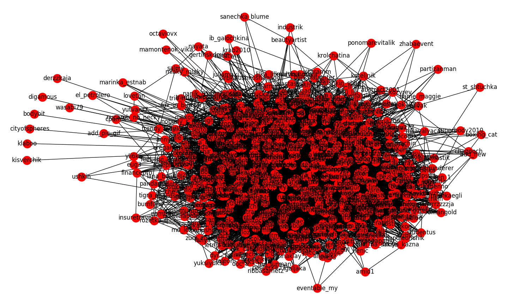
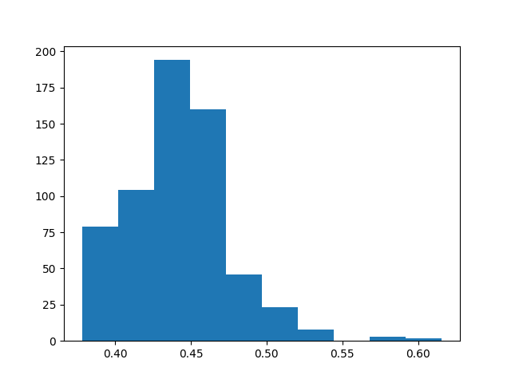

中心性、权力与瓶颈
样本数据
LiveJournal 是一家在俄罗斯和东欧地区受欢迎的博客网站，它提供了简单的API接口可用于数据挖掘。
从LiveJournal获得数据
下面的代码将利用LiveJournal的API接口，获得指定用户的朋友关系：
import sys
import os
import networkx as net
import urllib.request
def read_lj_friends(g, name):
response=urllib.request.urlopen('http://www.livejournal.com/misc/fdata.bml?user='+name)
for line in response.readlines():
if line.startswith(b'#'): continue
parts=line.split()
if len(parts)==0: continue
if parts[0]=='<':
g.add_edge(parts[1],name)
else:
g.add_edge(name,parts[1])
上述函数的第一个参数g，为图对象，由节点、边与代表朋友的人名构成；另一个参数name，为用户名，将查询该用户在LiveJournal网站中的朋友信息（即关注和被关注）。
滚雪球抽样
人类对社会网络存在“可观测性的界限”（Horizon of Observability）,我们能很好地感知到谁是朋友，但是我们对朋友的朋友、朋友的朋友的朋友的认知水平会迅速下降，我们几乎对朋友的朋友的朋友几乎一无所知。
基于上述现象，我们通常会限制搜索到二级水平（朋友的朋友），为围绕中心者的社会网络提供一个相当完整的图。要达到上述目的，我们可以采用滚雪球抽样法：
- 开始于一个中心节点
- 获得中心节点的朋友
- 对于每一个朋友：对他们的朋友进行抽样
- 对于朋友的朋友，对他们的朋友进行抽样
- 以此类推
Python的滚雪球抽样，可用递归来实现：
def snowball_sampling(g, center, max_depth=1, current_depth=0, taboo_list=[]):
print(center, current_depth, max_depth, taboo_list)
if current_depth == max_depth:
print('out of depth')
return taboo_list
if center in taboo_list:
print('taboo')
return taboo_list
else:
taboo_list.append(center)
read_lj_friends(g, center)
for node in g.neighbors(center):
taboo_list = snowball_sampling(g, node, current_depth=current_depth+1, max_depth=max_depth, taboo_list=taboo_list)
return taboo_list
保存数据到本地文件
保存文件可以使用Pajek的文本格式：
net.write_pajek(g,'lj_friend.net')
中心性
分析社会网络的主要方法是测量它的权力、影响力，即中心性。
网络中谁更重要
中心性的含义通常首先看“它的依赖”，它取决于连接的节点是否有信息交换或者职责关系，取决于对所需的权力和影响力的认知作为输出。
发现“名人”
程度中心性（degree centrality），节点度（node degree）简单来说，就是所有与它有关的连接数量。程度中心度高，还要看联系及关系的性质。但无论如何，程度中心性是理解社会网络的一项非常有用的测量指标。
在Python中，使用networkX的degree()方法可以非常方便地出计算程度中心性，例如：
import sys
import os
import networkx as net
import matplotlib.pyplot as plot
# 读取网络数据
g = net.read_pajek('russians.net')
# 计算图的度，保存在变量deg
deg = net.degree(g)
# 将其转换为字典，方便排序和查找值
deg = dict(deg)
print('用户valerois在网络中的程度中心值为：', deg['valerois'])
print('该网络中用户的最小程度中心值为：', min(deg.values()))
print('该网络中用户的最大程度中心值为：', max(deg.values()))
# 按照字典的值进行倒序排序
def sorted_map(map):
ms = sorted(map.items(), key=lambda item: item[1], reverse=True)
return ms
# 输出排序结果，显示程度中心值最大的前十位用户信息
ds = sorted_map(deg)
print(dict(ds[0:9]))
# 用图形的方式展示程度中心性
h = plot.hist(deg.values(), 100)
plot.show()
plot.loglog(h[1][1:], h[0])
plot.show()
网络科研研究者普遍发现，绝大多数实际网络的度分布服从幂律分布。由于幂律分布具备标度不变性，因此，网络科学研究者将度分布服从幂律分布的网络统称为无标度网络（scale-free network）。
如何找到网络中最核心的受欢迎者，我们可以选择某一标准（如程度中心性小于10，或者100）,删除一些节点以简化网络，方便对网络进行可视化处理。例如：
# 定义删除节点的函数
def trim_degrees(g, degree=1):
g2 = g.copy()
[g2.remove_node(k) for k, v in dict(g2.degree()).items() if v <= degree]
return g2
print('网络中总共有：', len(g), '个节点')
# 删除程度中心性小于10的节点
core = trim_degrees(g, degree=10)
print('删除程度中心性小于10的节点后，网络还有', len(core), '个节点')
# 对网络进行可视化处理
net.draw(core, with_labels=True)
plot.show()

发现八卦传播者
每个自我(ego)获取信息和向其他人传递的能力，很大程度上由它和网络的其余节点之间的距离决定。那些将信息从网络一边移动到另一边的能力，是建立对世界的共识的重要一步。因此，与他人的距离可以定义一个人在社会网络中的角色。
亲近中心性（closeness centrality），就是用来测量节点与其他节点的相对距离。这个值越高，意味着亲近中心性更大，即与他人的平均距离越低。
虽然亲近中心性的计算过程非常复杂，但在NetworkX中已经将其封装，我们只需简单调用closeness_centrality()方法即可。
# 计算并输出网络的亲近中心性
c = net.closeness_centrality(core)
cs = sorted_map(c)
print(cs[:10])
plot.hist(dict(c).values())
plot.show()
输出的结果如下：
[('azbukivedi', 0.6155378486055777), ('valerois', 0.6137040714995035), ('bagira', 0.5896946564885496), ('karial', 0.5738161559888579), ('kpoxa_e', 0.5722222222222222), ('yelya', 0.5369244135534318), ('kirulya', 0.5364583333333334), ('angerona', 0.535064935064935), ('borisakunin', 0.53184165232358), ('snorapp', 0.5300171526586621)]

在上图中，我们可以看到，大部分人都分布在钟形曲线的左边。
发现传播瓶颈或社会桥梁
居间中心性（Betweenness centrality）建立在如下假设之上：即一个人如果可以把持传播通道的话，则他可能会获得更大的权力。
居间中心性另一个重要作用就是它能够分辨出谁是“跨界者”（boundary spanners），即分辨出那些在两个或更过个团体中扮演着不可或缺的桥梁作用的个体。
居间中心性的算法在计算大型网络是非常耗时。NetworkX中的betweenness_centrality()方法可以方便的计算出网络个节点的居间中心性。
b = net.betweenness_centrality(core)
bs = sorted_map(b)
print(bs[:10])
输出结果如下：
[('valerois', 0.21148671833684918), ('azbukivedi', 0.09068546983753605), ('bagira', 0.06415743377135999), ('karial', 0.049436498735116984), ('kpoxa_e', 0.040441270584172254), ('snorapp', 0.02624442003749055), ('borisakunin', 0.023042685592280548), ('kirulya', 0.022601460496828554), ('eprst2000', 0.021420612080769154), ('doctor_liza', 0.020507259543668846)]
每个网络中都有一定的“精英群体”，经常的情况是，居间中心性、程度中心性和亲近中心性都指向这些人。这些人，无疑在信息传递过程中的重要节点。
整合
我们可以用下面的表格，将中心性指标整合在一起：
| 测量指标 | 程度中心性低 | 亲近中心性低 | 居间中心性低 |
|---|---|---|---|
| 程度中心性高 | —— | “自我”所嵌入的聚类远离网络中其他节点 | “自我”的联系人是冗余的，整个世界绕他而行 |
| 亲近中心性高 | 是联系重要他人或活跃人物的关键人物 | —— | 在事件中，“自我”位于一个相互联系密切、活跃的聚类中，与很多节点都很接近 |
| 居间中心性高 | “自我”的部分关系制约着整个网络的走向 | “自我”垄断了从少数人到多数人的关系 | —— |
可以通过如下代码，将三者结合在同一个表格中：
names1 = [x[0] for x in ds[:10]]
names2 = [x[0] for x in cs[:10]]
names3 = [x[0] for x in bs[:10]]
names = list(set(names1) | set(names2) | set(names3))
table = [[name, d[name], c[name], b[name]] for name in names]
表格如下：
| 姓名 | 程度中心性 | 亲近中心性 | 居间中心性 |
|---|---|---|---|
| 'samoleg' | 2597 | 0.4753846153846154 | 0.01566368046337763 |
| 'doctor_liza' | 3046 | 0.48168355416991426 | 0.020507259543668846 |
| 'tareeva' | 2970 | 0.47575057736720555 | 0.0058846904873034196 |
| 'yelya' | 582 | 0.5369244135534318 | 0.015239326752752018 |
| 'elladkin' | 2616 | 0.46466165413533833 | 0.015728236400152962 |
| 'valerois' | 232 | 0.6137040714995035 | 0.21148671833684918 |
| 'azbukivedi' | 2541 | 0.6155378486055777 | 0.09068546983753605 |
| 'kirulya' | 2398 | 0.5364583333333334 | 0.022601460496828554 |
| 'angerona' | 752 | 0.535064935064935 | 0.01923800645354709 |
| 'masha_koroleva' | 2683 | 0.4959871589085072 | 0.012624543545596001 |
| 'eprst2000' | 2510 | 0.5286569717707442 | 0.021420612080769154 |
| 'cheger' | 2887 | 0.3992248062015504 | 0.0007174304877532311 |
| 'karial' | 2717 | 0.5738161559888579 | 0.049436498735116984 |
| 'kpoxa_e' | 946 | 0.5722222222222222 | 0.040441270584172254 |
| 'bagira' | 1481 | 0.5896946564885496 | 0.06415743377135999 |
| 'borisakunin' | 4691 | 0.53184165232358 | 0.023042685592280548 |
| 'snorapp' | 2707 | 0.5300171526586621 | 0.02624442003749055 |
| 'zina_korzina' | 2596 | 0.49282296650717705 | 0.008964320341170728 |
谁是灰衣主教
所谓灰衣主教，指的是在社会网络中所处位置具有巨大力量的幕后大佬，通过使用程度中心性、居间中心性或亲近中心性等指标很难发现此类节点。
菲利普·博纳西科设计了一套特征向量中心性（eigenvector centrality）算法，可用来检测“灰衣主教”，这套算法在NetworkX中就是eigenvector_centrality()方法。
PageRank
PageRank类似于特征向量中心性，但它的算法在庞大社会网络和网络的时间推移中，扩展性会更好。
NetworkX提供了PageRank算法pagerank()。
中心性测量不能告诉我们什么
中心度测量不能告诉我们人们为什么在争论中的站队，是什么力量使得网络连接在一起，又是什么离间了他们。对于上述问题，我们必须深入节点层面的测量指标，通过三元组，可以挖掘出更大的派系和聚类。